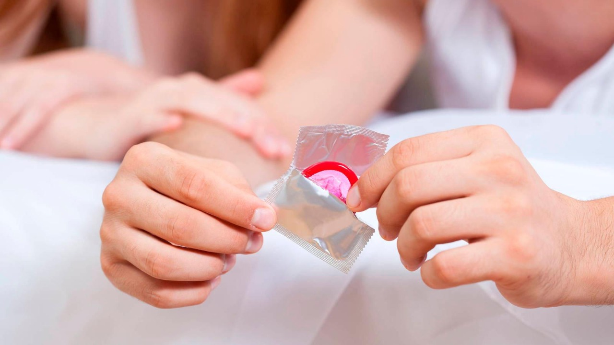

La vasectmía consiste en...
Metodos Anticonceptivos para Hombres
Preservativo
El preservativo es el método anticonceptivo de barrera más frecuente para los hombres, con una eficacia del 97 por ciento. Consiste en una funda de látex (u otros materiales sintéticos) que se coloca sobre el pene, impidiendo así el paso del semen y reteniéndolo.
Ventajas y desventajas del preservativo
Ventajas
- Evita el embarazo.
- Previene las infecciones de transmisión sexual.
- Se utiliza como método anticonceptivo complementario.
Desventajas
- Interviene en el ciclo de respuestas sexual.
- Hay personas alérgicas al látex.
Vasectomía
Es un método anticonceptivo irreversible que se realiza a través de una cirugía sencilla en los conductos deferentes que transportan los espermatozoides del testículo al pene. Es para quienes deciden no tener hijos/as o ya tuvieron y no quieren tener más.
Ventajas y riesgos de la vasectmía
Ventajas
- Es un método anticonceptivo de gran eficiencia.
- Es un procedimiento quirúrgico sencillo.
- La recuperación es rápida.
- La líbido y desempeño sexual no se afectan.
- Los controles son solo una vez.
Riesgos
- Es un método anticonceptivo permanente.
- La eficacia no es rápida.
- Provoca dolor, inflamacion y molestias